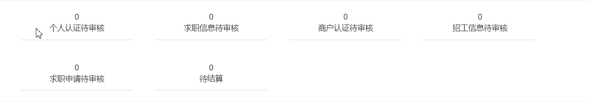
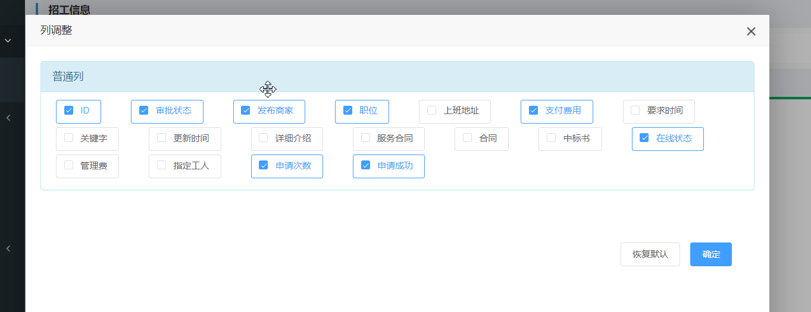
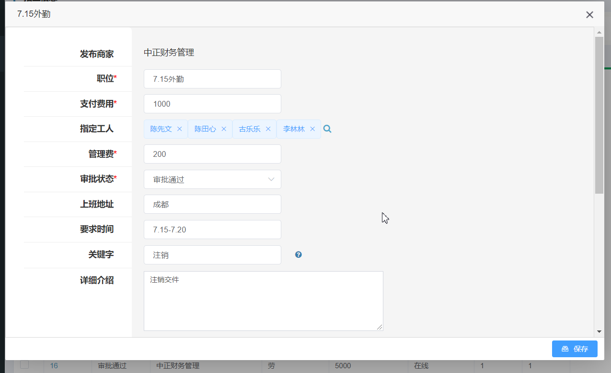
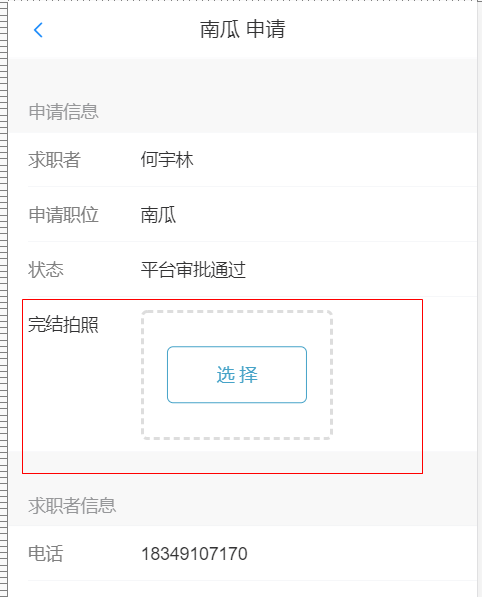

2.1. 2020-07-18
2.1.1. 首页统计面板
更新首页面板，修正跳转bug，按照客户需求调整顺序

2.1.2. 申请统计
在商家 > 招工信息 页面增加申请次数与申请成功统计功能。
2.1.3. 页面字段显示设置
在商家 > 招工信息等几个字段较多的页面增加设置列按钮。弹出界面可以设置想要显示的字段，并且可以拖动调整显示顺序。做出的修改会保存在本地。凡是有设置列按钮的页面，也具备列宽记忆功能。

2.1.4. 招工指定多人
对于招工信息，现在加入了指定多人的功能。

2.1.5. 完结拍照
在商户的移动界面下，当状态为平台审批通过时，会显示完结拍照字段，用户可以拍照上传作为完结依据。
